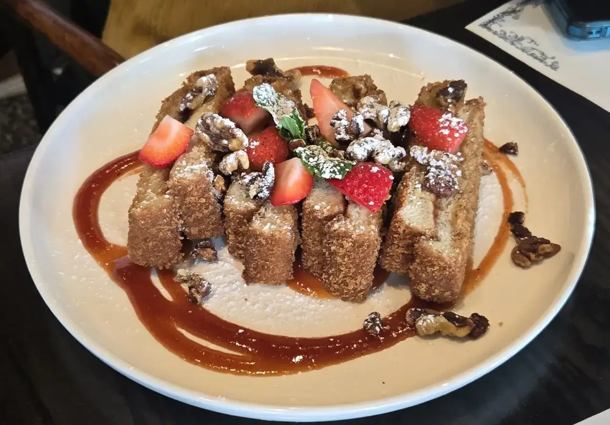
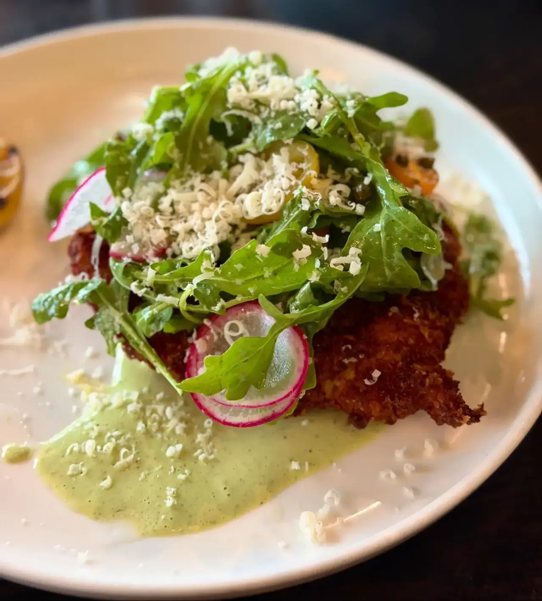
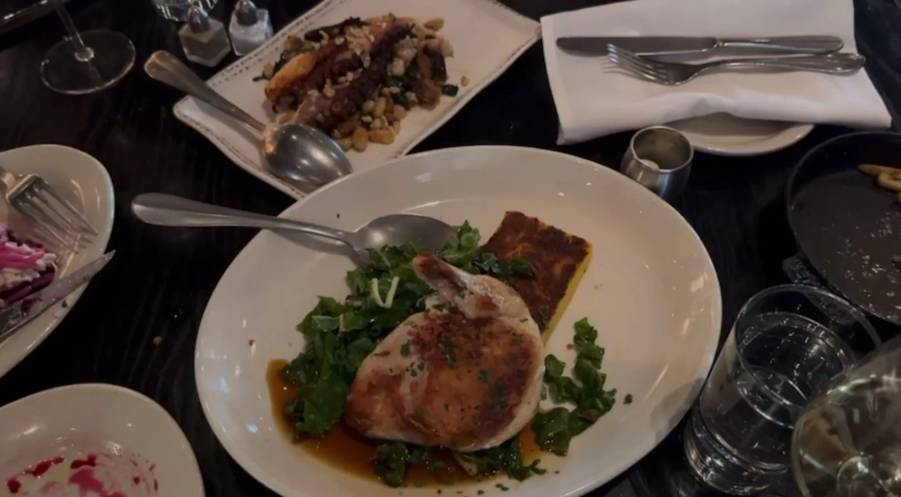

Brunch
Saturday and Sunday, from 10am. French toast with berries and caramel.
Oak & Ola · Carrollwood
Oak & Ola serves Carrollwood from Tampa.
Oak & Ola is based in Tampa and works with customers from Carrollwood. Call (813) 773-1901 to ask about timing and directions.
Lunch, dinner and weekend brunch
Open daily for lunch and dinner, with brunch on Saturday and Sunday.

Saturday and Sunday, from 10am. French toast with berries and caramel.

Deviled eggs with fried capers and a chicken salad croissant sandwich. Fresh and tasty.

Burrata salad, salmon, lobster ravioli and toffee cake, plus cocktails from the special menu.
4.6 ★ · 1501 Google reviews
We sat at the bar (there were tables for walk-ins available but we’re bar people) and the service was top tier. DeAngelo gave a great service at the bar. He was very attentive, his cocktails were delicious, and he was very very kind and skillful. Gotta try the Guavamente from the special cocktails menu! We had a burrata salad, a salmon, and lobster ravioli. Everything was marvelous.
We had such a wonderful first experience at Oak & Ola! Everything was amazing…each dish was delightful, unique, and absolutely delicious. But what stood out most was the exceptional service. From the warm welcome when we arrived to our wonderful server, Josh, we felt so well taken care of throughout the entire meal.
We had such a wonderful experience at Oak & Ola! We celebrated my niece’s 20th birthday, and everything was excellent. The food and drinks were delicious, and Zachary, our server, was absolutely amazing, attentive, friendly, and made sure we had a great experience from start to finish. My niece had an amazing birthday dinner, which made the evening even more special. We’ll definitely be back! ❤️
Sooo Oak & Ola is a repeat for me, and I’m definitely late on this review. I’ve been for both lunch and dinner, and each time the food has been fresh and tasty. I really like the interior decor and attention to detail. Our server was attentive and nice, which made the experience even better. What I ordered: Deviled Eggs: The fried capers set it off! Chicken Salad Croissant Sandwich: Fresh and filling
Must make a reservation on busier nights. They were accommodating to being late due to traffic while parking because of an event, but then when I did check in I still had to wait. Not an issue, just want to clarify my own experience in case it happens to anyone else. After that the restaurant was such a nice quiet atmosphere compared to the event going on outside.